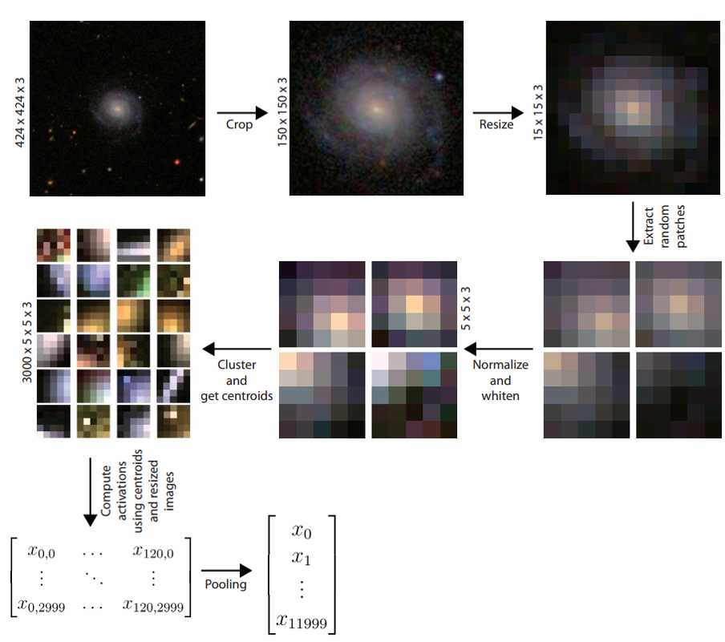
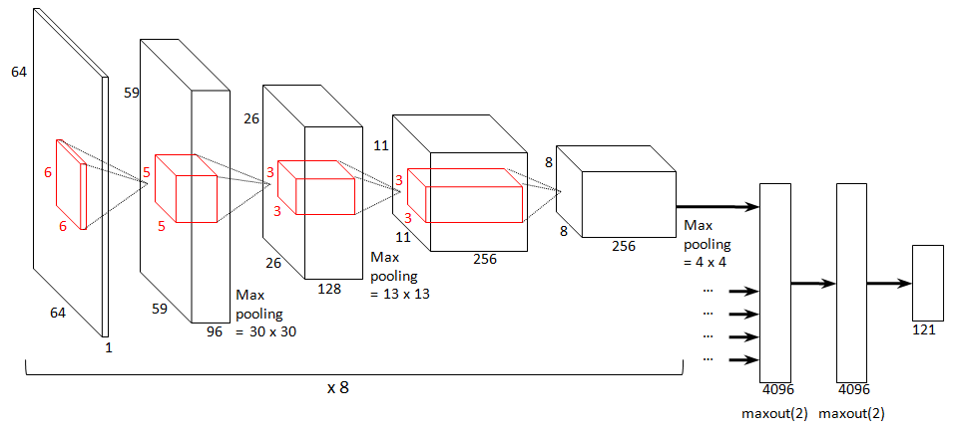

class: center, middle, inverse # Best Whale Wow ### Steven Reitsma, Robbert van der Gugten, <br>Luc Nies, Planktom van de Poll, Inez Wijnando, Guido Zuidhof --- .left-column[ ### Approach ] .right-column[ ## Two approaches - Single-layer unsupervised feature extraction [Coates et al.] - Convolutional neural networks [Krizhevsky et al.] ] --- .left-column[ ### Approach ### K-Means ] .right-column[ ## Single-layer unsupervised feature extraction * Preprocessing * Unsupervised feature learning * K-means * Restricted Boltzmann Machines *(RBM)* * Activation calculation and pooling * Train classifier *(SVM, SGD)* * Predict test set  ] --- --- .left-column[ ### Approach ### K-Means ] .right-column[ ## Results * Either not a good fit for this data set, or erroneous implementation * Best *log loss* of **2.66** ] --- .left-column[ ### Approach ### K-Means ### CNN ] .right-column[ ## Architecture ### 4 convolutional layers - 6x6, 5x5, 3x3, 3x3 - 96, 128, 256, 256 filters <br>  ] --- .left-column[ ### Approach ### K-Means ### CNN ] .right-column[ ## Architecture ### 3 max-pooling layers - 2x2 <br><br> ] --- .left-column[ ### Approach ### K-Means ### CNN ] .right-column[ ## Architecture ### Fully-connected layers - 4096, 4096, 121 - *Dropout* - *Maxout* <br><br> ] --- .left-column[ ### Approach ### K-Means ### CNN ] .right-column[ ## Data Augmentation Our base model achieved a score of **1.547409** ###Add rotations and flips to the training set * Reduces overfitting * Score: **1.022004** (-0.53) ###Taking this one step further using real time augmentation * Every image is rotated, flipped and resized randomly before feeding it through the network * Requires a lower learning rate and more iterations * Score: **0.931495** (-0.091) ] --- .left-column[ ### Approach ### K-Means ### CNN ] .right-column[ ## Test-time augmentation * When predicting an image, also predict the distribution for its rotations and flips * Average predictions uniformly * Score: **0.860739** (-0.071) This method was also used by the winner ] --- .left-column[ ### Approach ### K-Means ### CNN ] .right-column[ ## Concurrent parameter sharing * Every image (already perturbed by the real time augmentation) is rotated 90, 180 and 270 degrees, and flipped * This results in 8 versions per image * Each image is fed through the network, filters are shared * Filter activations in final convolutional layer are concatenated * Reduces overfitting and increases rotation invariance * Score: **0.794818** (-0.066) * Our best single model score ] --- .left-column[ ### Approach ### K-Means ### CNN ] .right-column[ ## Other improvements * Leaky ReLU's * Top-hat filter ] --- .left-column[ ### Approach ### K-Means ### CNN ] .right-column[ ## Model blending We blended the predictions of four networks uniformly * Score: **0.719978** (-0.074) ] --- .left-column[ ### Approach ### K-Means ### CNN ] .right-column[ ## Further improvements * Weighted blending * Pseudolabeling * Cyclic rolls ] --- .left-column[ ### Approach ### K-Means ### CNN ### Improvements ] .right-column[ ## General improvements * Coates method working correctly * Combining the two approaches hierarchically ] --- .left-column[ ### Approach ### K-Means ### CNN ### Improvements ### References ] .right-column[ 1. **Adam Coates, Andrew Y. Ng, and Honglak Lee.** *"An analysis of single-layer networks in unsupervised feature learning."* International Conference on Artificial Intelligence and Statistics. 2011. 2. **Alex Krizhevsky, Ilya Sutskever, and Geoffrey E. Hinton.** *"Imagenet classification with deep convolutional neural networks."* Advances in neural information processing systems. 2012. 3. **Steven Reitsma.** *“Rotation invariant feature extraction in the classification of galaxy morphologies.”* The 26th Benelux Conference on Artificial Intelligence. 2014. ]